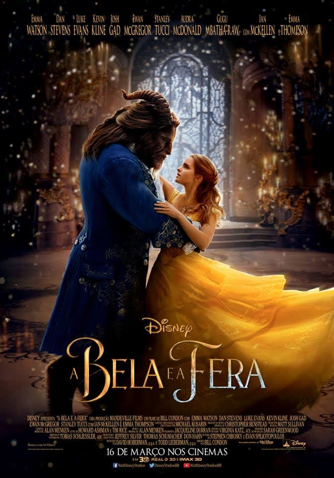
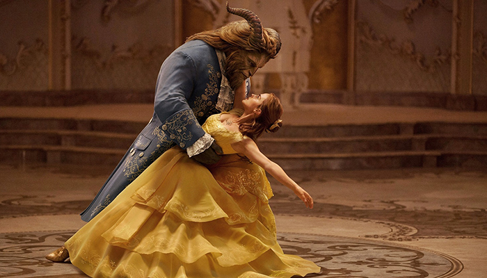

Imagem de divulgação do filme A Bela e a Fera.
Lançamento:16 de março de 2017.(Brasil)
Diretor:Bill Condon
Lançado em 2017, o live-action de A Bela e a Fera foi um dos mais bem sucedidos dessa leva da Disney em adaptar suas animações clássicas para versões de carne e osso (e CGI). Com mais de US$ 1 bilhão em bilheteria e críticas positivas, o longa conseguiu resgatar parte da magia do original e trazê-la para as novas gerações.

Moradora de uma pequena aldeia francesa, Bela tem o pai capturado pela Fera e decide entregar sua vida ao estranho ser em troca da liberdade do progenitor. No castelo, ela conhece objetos mágicos e descobre que a Fera é na verdade um príncipe que precisa de amor para voltar à forma humana.